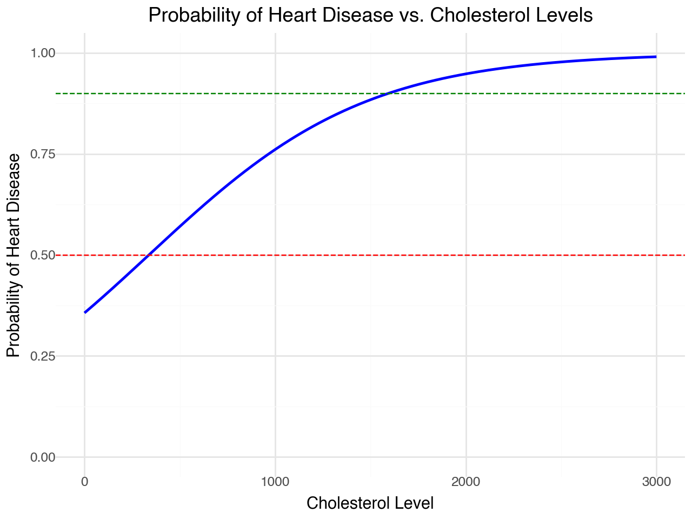
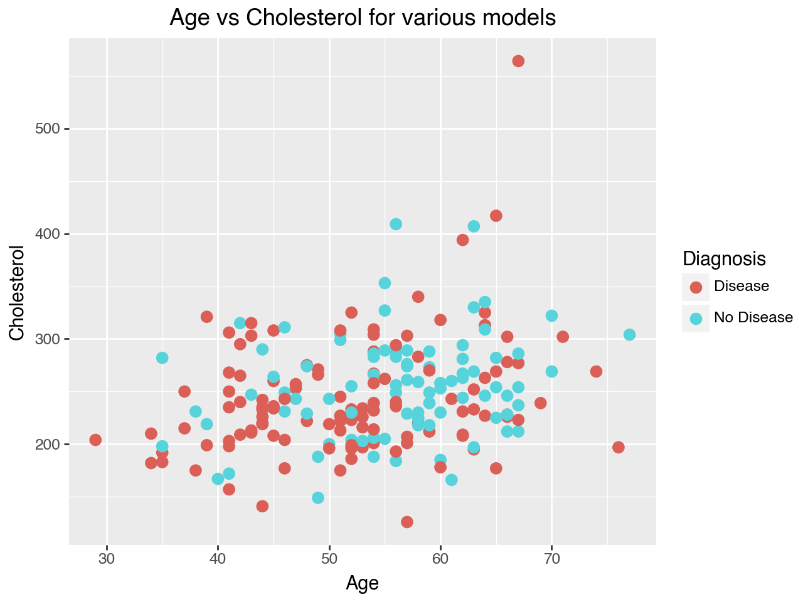

import pandas as pd
from sklearn.model_selection import train_test_split, GridSearchCV
from sklearn.preprocessing import StandardScaler, OneHotEncoder
from sklearn.compose import ColumnTransformer
from sklearn.pipeline import Pipeline
from sklearn.linear_model import LogisticRegression
from sklearn.metrics import accuracy_score, confusion_matrix, classification_report
from sklearn.discriminant_analysis import LinearDiscriminantAnalysis
from sklearn.svm import SVCThe Data
At this link, you will find a dataset containing information about heart disease patients: https://www.dropbox.com/scl/fi/0vrpdnq5asmeulc4gd50y/ha_1.csv?rlkey=ciisalceotl77ffqhqe3kujzv&dl=1
A description of the original dataset can be found here: https://archive.ics.uci.edu/dataset/45/heart+disease (However, this dataset has been cleaned and reduced, and the people have been given fictious names.)
1. Logistic Regression
Fit a Logistic Regression using only age and chol (cholesterol) as predictors.
For a 55 year old, how high would their cholesterol need to be for the doctors to predict heart disease is present?
How high for the doctors to estimate a 90% chance that heart disease is present?
# Load data
data = pd.read_csv("/Users/ethanschultz/Downloads/ha_1.csv")
data_clean = data.dropna()
data_clean["diagnosis"] = data_clean["diagnosis"].map({'No Disease': 0, 'Disease': 1}) # Replace with actual categories
# Define features and target
X = data[['age', 'chol']]
y = data['diagnosis']
# Split into training and test sets
X_train, X_test, y_train, y_test = train_test_split(X, y, test_size=0.3, random_state=42)
# Define preprocessing steps
ct = ColumnTransformer(
[
("standardize", StandardScaler(), ["age", "chol"]) # Standardize age and chol
],
remainder="passthrough"
)
# Logistic regression pipeline
logreg = Pipeline(
[("preprocessing", ct), ("log", LogisticRegression())]
)
# Fit the model
logreg.fit(X_train, y_train)
# Make predictions on the test set
y_pred = logreg.predict(X_test)
# Evaluate the model
accuracy = accuracy_score(y_test, y_pred)
conf_matrix = confusion_matrix(y_test, y_pred)
report = classification_report(y_test, y_pred)
print(f"Accuracy: {accuracy:.2f}")
print("Confusion Matrix:")
print(conf_matrix)
print("Classification Report:")
print(report)
# Extract coefficients and intercept
log_model = logreg.named_steps['log']
print("Model Coefficients:")
print(log_model.coef_)
print("Intercept:")
print(log_model.intercept_)Accuracy: 0.56
Confusion Matrix:
[[24 12]
[15 11]]
Classification Report:
precision recall f1-score support
Disease 0.62 0.67 0.64 36
No Disease 0.48 0.42 0.45 26
accuracy 0.56 62
macro avg 0.55 0.54 0.54 62
weighted avg 0.56 0.56 0.56 62
Model Coefficients:
[[0.43575626 0.09356188]]
Intercept:
[-0.23830027]
Accuracy: 0.56
Confusion Matrix:
[[24 12]
[15 11]]
Classification Report:
precision recall f1-score support
Disease 0.62 0.67 0.64 36
No Disease 0.48 0.42 0.45 26
accuracy 0.56 62
macro avg 0.55 0.54 0.54 62
weighted avg 0.56 0.56 0.56 62
Model Coefficients:
[[0.43575626 0.09356188]]
Intercept:
[-0.23830027]import plotnine
from plotnine import *
import numpy as np
cholesterol_levels = np.arange(0, 3001, 10) # Cholesterol levels from 0 to 500 in steps of 10
data_55 = pd.DataFrame({
"age": [55] * len(cholesterol_levels),
"chol": cholesterol_levels
})
probabilities = logreg.predict_proba(data_55)[:, 1] # Probability of heart disease (class 1)
# Add probabilities to the dataset
data_55['probability'] = probabilities
(
ggplot(data_55, aes(x='chol', y='probability')) +
geom_line(color='blue', size=1) + # Line plot for probabilities
geom_hline(yintercept=0.5, linetype='dashed', color='red') + # Decision threshold
ylim(0,1) +
geom_hline(yintercept=0.9, linetype="dashed", color = "green") +
labs(
title="Probability of Heart Disease vs. Cholesterol Levels",
x="Cholesterol Level",
y="Probability of Heart Disease"
) +
theme_minimal()
)Around a cholesterol of 350 for 55 year olds to have heart disease and the cholesterol value for 90% certianty of having heart disease is around 1550.
2. Linear Discriminant Analysis
Fit an LDA model using only age and chol (cholesterol) as predictors.
For a 55 year old, how high would their cholesterol need to be for the doctors to predict heart disease is present?
lda = Pipeline(
[("preprocessing", ct), ("lda", LinearDiscriminantAnalysis())]
)
# Fit the model
lda.fit(X_train, y_train)
# Make predictions on the test set
y_pred = lda.predict(X_test)
# Evaluate the model
accuracy = accuracy_score(y_test, y_pred)
conf_matrix = confusion_matrix(y_test, y_pred)
report = classification_report(y_test, y_pred)
print(f"Accuracy: {accuracy:.2f}")
print("Confusion Matrix:")
print(conf_matrix)
print("Classification Report:")
print(report)
# Extract coefficients and intercept
lda_model = lda.named_steps['lda']
print("Model Coefficients:")
print(lda_model.coef_)
print("Intercept:")
print(lda_model.intercept_)Accuracy: 0.56
Confusion Matrix:
[[24 12]
[15 11]]
Classification Report:
precision recall f1-score support
Disease 0.62 0.67 0.64 36
No Disease 0.48 0.42 0.45 26
accuracy 0.56 62
macro avg 0.55 0.54 0.54 62
weighted avg 0.56 0.56 0.56 62
Model Coefficients:
[[0.44622706 0.09117852]]
Intercept:
[-0.23852861]
Accuracy: 0.56
Confusion Matrix:
[[24 12]
[15 11]]
Classification Report:
precision recall f1-score support
Disease 0.62 0.67 0.64 36
No Disease 0.48 0.42 0.45 26
accuracy 0.56 62
macro avg 0.55 0.54 0.54 62
weighted avg 0.56 0.56 0.56 62
Model Coefficients:
[[0.44622706 0.09117852]]
Intercept:
[-0.23852861]probabilities = lda.predict_proba(data_55)[:, 1] # Probability of heart disease (class 1)
# Add probabilities to the dataset
data_55['probability'] = probabilities
(
ggplot(data_55, aes(x='chol', y='probability')) +
geom_line(color='blue', size=1) + # Line plot for probabilities
geom_hline(yintercept=0.5, linetype='dashed', color='red') + # Decision threshold
ylim(0,1) +
geom_hline(yintercept=0.9, linetype="dashed", color = "green") +
labs(
title="Probability of Heart Disease vs. Cholesterol Levels",
x="Cholesterol Level",
y="Probability of Heart Disease"
) +
theme_minimal()
)
The cholesterol for a 55 year old based on the LDA model is a little higher than the logistic regression I would say around 360.
3. Support Vector Classifier
Fit an SVC model using only age and chol as predictors. Don’t forget to tune the regularization parameter.
For a 55 year old, how high would their cholesterol need to be for the doctors to predict heart disease is present?
numeric_transformer = StandardScaler()
ct = ColumnTransformer(
transformers=[
('num', numeric_transformer, ["age", "chol"])
]
)
svc_pipeline = Pipeline([
('preprocessor', ct),
('svc', SVC(kernel='linear', probability=True, random_state=42))
])
param_grid = {'svc__C': [0.01, 0.1, 1, 10, 100]}
grid_search = GridSearchCV(svc_pipeline, param_grid, cv=5, scoring='accuracy')
grid_search.fit(X, y)
best_svc_model = grid_search.best_estimator_.named_steps['svc']
print(f"Best C: {grid_search.best_params_['svc__C']}")
age = 55
cholesterol = np.arange(data_clean['chol'].min(), data_clean['chol'].max() + 10, 10)
df_predict1 = pd.DataFrame({
'age': [age] * len(cholesterol),
'chol': cholesterol
})
df_predict1['heart_disease_prob'] = best_svc_model.predict_proba(df_predict1)[:, 1]
df_predict1[(df_predict1['heart_disease_prob'] < 0.51) & (df_predict1['heart_disease_prob'] > 0.49)]
Best C: 10
Best C: 10/opt/anaconda3/lib/python3.12/site-packages/sklearn/base.py:486: UserWarning: X has feature names, but SVC was fitted without feature names| age | chol | heart_disease_prob |
|---|
We can see the cholesterol is ranging from 486-526
4. Comparing Decision Boundaries
Make a scatterplot of age and chol, coloring the points by their true disease outcome. Add a line to the plot representing the linear separator (aka decision boundary) for each of the three models above.
from plotnine import *
intercept_log = log_model.intercept_[0]
coeff_age_log = log_model.coef_[0][0]
coeff_chol_log = log_model.coef_[0][1]
intercept_lda = lda_model.intercept_[0]
coeff_age_lda = lda_model.coef_[0][0]
coeff_chol_lda = lda_model.coef_[0][1]
intercept_svc = best_svc_model.intercept_[0]
coeff_age_svc = best_svc_model.coef_[0][0]
coeff_chol_svc = best_svc_model.coef_[0][1]
# Prepare a DataFrame for plotting with `plotnine`
ha_df = pd.DataFrame({
'age': X['age'],
'chol': X['chol'],
'diagnosis': y
})
(ggplot(ha_df, aes(x='age', y='chol', color='factor(diagnosis)'))
+ geom_point(size=3)
+ geom_abline(slope=-coeff_age_log/coeff_chol_log, intercept=-intercept_log/coeff_chol_log, linetype='solid', color='purple', size=1)
+ geom_abline(slope=-coeff_age_lda/coeff_chol_lda, intercept=-intercept_lda/coeff_chol_lda, linetype='dashed', color='blue', size=1)
+ geom_abline(slope=-coeff_age_svc/coeff_chol_svc, intercept=-intercept_svc/coeff_chol_svc, linetype='dotted', color='pink', size=1)
+ labs(title="Age vs Cholesterol for various models",
x="Age",
y="Cholesterol",
color="Diagnosis")
)